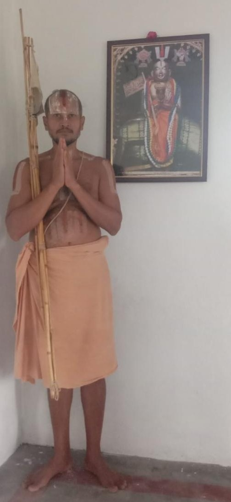

Jeeyar Swami Details
Deeply rooted in the Srivaishnava tradition, Swami was initiated at the age of 7 by His Holiness UV Sri Kovil Kandadai Annan, Srirangam, and embraced sannyasa at Melukote in 2021.
Swami holds a B.Sc. in Mathematics and an M.Sc. in Software Technology, with a distinguished career in leading MNCs, culminating as a Software Architect until 2016.
Swami’s areas of interest include mathematics, music, tarka (logic), metaphysics, eschatology and epistemology (study of interpretations). Swami likes to address the foundational challenges in science in a positive tone, and is very much interested in identifying the strengths of both traditional scripture and modern science, so that they can work together for a sensible future that has a long-lasting peace of society, if not liberation.
Currently Swami has taken Nitya vaasam for the eternal service of Jagadguru Ramanujacharya at Saligrama, and continues to provide guidance and lectures for aspiring knowledge seekers.

Shri Bhashyakaraswami Devasthana, Saligrama, Mysore
Saligrama, on the northern bank of the Kaveri in Mysuru district, is held sacred by Srivaishnavas as a place where Sri Ramanuja lived. The pond here, made holy when Mudaliandan placed his feet in it at Swami Ramanuja’s word, is known as the Sri Ramanuja Sripada Teertham, and in the small shrine facing it Swami Ramanuja’s thiruvadi are worshipped.